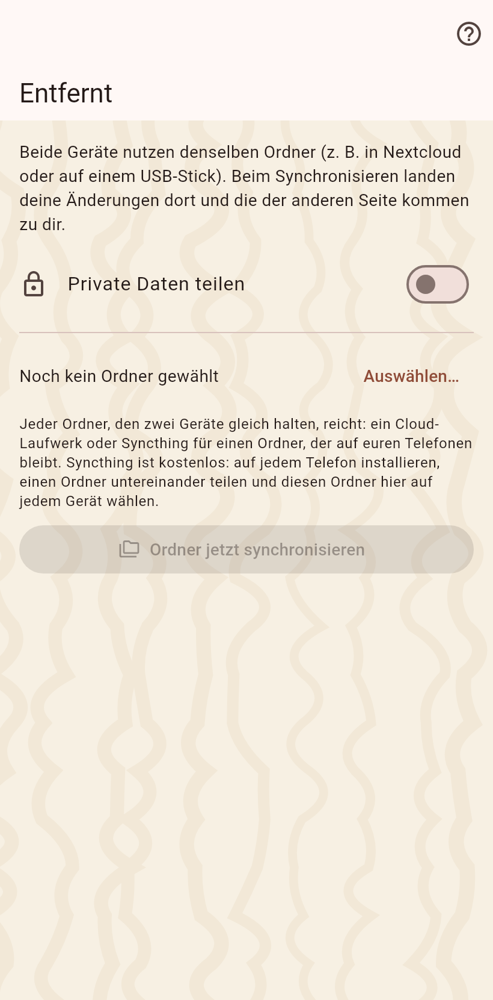

Für Geräte, die sich nie treffen: wähle einmal denselben Ordner auf jedem Gerät, auf einem Cloud-Client oder einem USB-Stick. Jeder Abgleich schreibt deine Änderungen hinein und liest die der anderen.

Wähle den Ordner; auf Android gibt das Telefon ihn einmal über die Auswahl frei. Ein Ordner trägt alle Kataloge, jeden in einem eigenen Unterordner. Eine Änderung erreicht den Ordner binnen Sekunden, solange die App auf dem Bildschirm ist, und der Ordner wird alle dreißig Sekunden angesehen.
Eine Zeile oben auf jeder Seite sagt, wessen Änderungen im Ordner warten; ein Tipp gleicht ab. Ein zweiter Schalter führt sie von selbst zusammen und meldet es in einer Notiz. Ein Ordner außer Reichweite erzeugt eine Notiz, die bleibt, bis sie weggewischt wird.
Deine Einträge und deine Fotos, ohne die Ortsangaben der Kamera. Private Werte nur mit dem Privat-Schalter an. Ein Partner, der noch eine ältere App hat, wird genannt, bis er aktualisiert.